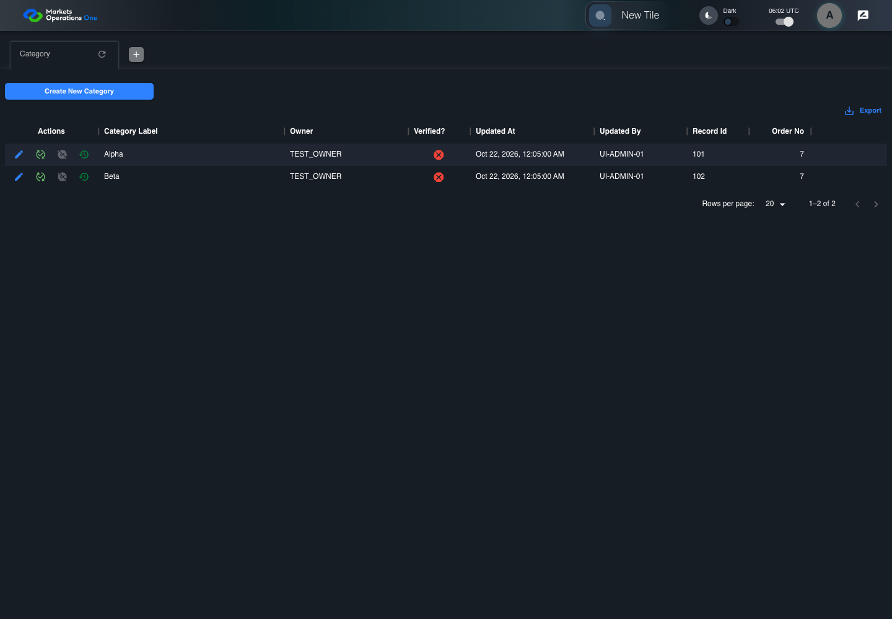

UX-070 administration boundary with step screenshots
PASS · application/run-050/ux-070-administration-boundary-with-step-screenshots-ae00ae02eacf-attempt-1 · ACTUAL_APPLICATION_LOCAL_SERVICES
Actual React administration screens. Controlled browser credentials, role, records, and BFF responses. Save probes persist the received UI payload without replacing it with expected values. Declared clock emulation controls field timers. Proposed accessibility and source-risk expectations remain separate from business approval.
2026-10-22T06:02:41.494Z to 2026-10-22T06:02:45.631Z
Assertions and result · Artifact manifest · Exact run inputs and source hashes
Result SHA-256:31454731cd1508ad757a8c0122e3d6f50e6147344d80ddc0f72c031157ba98e2Machine observations
- exported-csv.json
3e03d1d4e3b840cc92d13a2281e9d9577ae548f97fd038e66738ed3486ac8455 - parsed-export-csv.json
144141705182902044f7a0ebfe0adf35ebdb2064566d297ab541d17d5b091f03
Screenshot capture: CAPTURED. Named frames: 6.
Step screenshot evidence: COMPLETE. 5/5 canonical steps have execution screenshots.
Canonical step timeline
Given ADMIN-A has only C1 record101 Alpha and C2 record102 Beta in the category fixture
Execution: PASSED.
1. step-01 Visible state after step 1: Given ADMIN-A has only C1 record101 Alpha and C2 record102 Beta in the category fixture
2026-10-22T06:02:43.956Z · 1440×1000
Step: /Users/lushevol/code/github/ratan-release-impact/workbench/tasks/ui-test-coverage-20261022/test-cases.md:14554
SHA-256:5e2509baf9c306308f4594a2ee77c5846ab1bbfe7d18d77efd51d11191af89c8When ADMIN-A selects CSV export for the data grid containing column "Category Label" in the Category panel on the administration page
Execution: PASSED.2. step-02 Visible state after step 2: When ADMIN-A selects CSV export for the data grid containing column "Category Label" in the Category panel on the administration page
2026-10-22T06:02:44.354Z · 1440×1000
Step: /Users/lushevol/code/github/ratan-release-impact/workbench/tasks/ui-test-coverage-20261022/test-cases.md:14555
SHA-256:d88e2537e4a69c5e141e6b3af906beb3fb6e81af7da2a759a1f21ce15ffde3e5And The artifact probe parses the captured CSV using its exported header row
Execution: PASSED.
3. step-03 Visible state after step 3: And The artifact probe parses the captured CSV using its exported header row
2026-10-22T06:02:44.476Z · 1440×1000
Step: /Users/lushevol/code/github/ratan-release-impact/workbench/tasks/ui-test-coverage-20261022/test-cases.md:14556
SHA-256:d88e2537e4a69c5e141e6b3af906beb3fb6e81af7da2a759a1f21ce15ffde3e5Then The exported Record Id to Category Label mapping equals {101: "Alpha", 102: "Beta"}
Execution: PASSED.
4. step-04 Visible state after step 4: Then The exported Record Id to Category Label mapping equals {101: "Alpha", 102: "Beta"}
2026-10-22T06:02:44.582Z · 1440×1000
Step: /Users/lushevol/code/github/ratan-release-impact/workbench/tasks/ui-test-coverage-20261022/test-cases.md:14557
SHA-256:2f11104e863312f76c7ce0f679122ad704a788ee1104fff635417b2171f101ceAnd Each record appears exactly once with its values under the corresponding header fields
Execution: PASSED.
5. step-05 Visible state after step 5: And Each record appears exactly once with its values under the corresponding header fields
2026-10-22T06:02:44.675Z · 1440×1000
Step: /Users/lushevol/code/github/ratan-release-impact/workbench/tasks/ui-test-coverage-20261022/test-cases.md:14558
SHA-256:2f11104e863312f76c7ce0f679122ad704a788ee1104fff635417b2171f101ce
Additional named frames

The final visible state after the named test assertions.
2026-10-22T06:02:45.017Z · 1440×1000Step: Test source: /Users/lushevol/code/github/ratan-release-impact/workbench/e2e/audit-specs/admin-ux.spec.ts:12
SHA-256:
2f11104e863312f76c7ce0f679122ad704a788ee1104fff635417b2171f101ceScreenshots establish visible state only. Assertions and traces support functional claims.